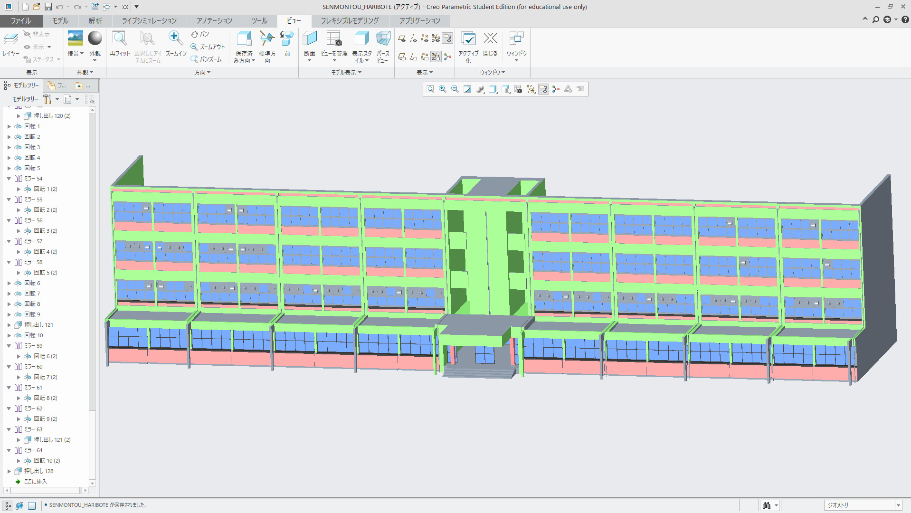
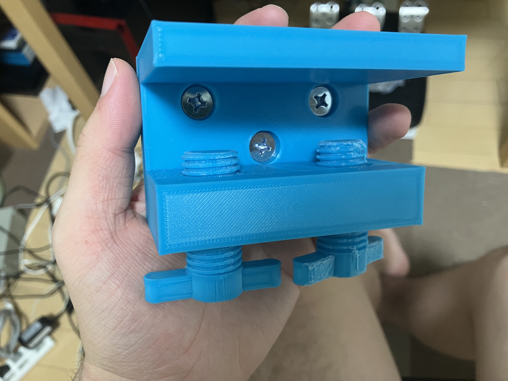

基本情報
飼い猫紹介
黒猫を飼っています。メスで名前はレイです。
趣味
休日や時間があるときはレースゲームをしたり、ギターを弾いたり、
3Dプリンターで工作をしたり、CG作ったりして遊んでいます。
クラゲの捕獲方法の研究
- 活動期間・・・・・・・・・半年間
- 授業時間外の活動時間・・・授業時間よりも多い
- 活動人数・・・・・・・・・４人
- 活動時期・・・・・・・・・高専３年生前期
概要説明
高専３年生前期カリキュラムの研究活動にて、漁業などに悪影響を与えるクラゲの大量発生問題解決のためのクラゲの
捕獲方法と消費方法についての研究を行いました。私はクラゲの捕獲方法についての研究を行いました。
成果物説明
これが半年間かけて製作したクラゲ捕獲ロボットハンドです。
食材として捕獲するため、クラゲを傷つけずに捕獲することを最大の目標に設計しました。
写真ではクラゲを模したゼリーをつかんでいます。
ハンドの開閉には、空気圧で曲がる人工筋肉３本を使用しています。人工筋肉は網目状の繊維チューブの
中に風船を入れて膨らませることでチューブ全体が縮むものを製作しました。
大阪公大高専中庭の3Dモデル製作
- 活動期間・・・・・・・・・半年間
- 授業時間外の活動時間・・・授業時間よりも非常に多い
- 活動人数・・・・・・・・・４人
- 活動時期・・・・・・・・・高専３年生後期
概要説明
高専３年生後期カリキュラムの研究活動にて、3DCGを用いて大阪公大高専校舎の一部を再現して校舎の問題点と
その改善案を提示する研究を行いました。私は高専中庭の地面と専門棟のCG製作を担当しました
成果物説明
専門棟の寸法は大きすぎて実物では測れないのでGoogle Earth Proの衛星写真から建造物の大まかな寸法を
測ることができるサービスを用いて測定しました。
測定結果を基にまずCADのCreoを用いて専門棟の形を製作しました。

Creoで作った3Dモデルをblenderにインポートしてテクスチャを設定してレンダリングしました。
最後に４人が製作したモデルを全て統合して中庭全体をレンダリングしました。上が実際の写真で下が3DCG
で再現したものです。研究結果としては中庭通路に屋根がなく雨に濡れてしまう問題を提起して屋根を
設置する改善案を提示しました。
ラジコンを用いた対戦ゲームの製作
- 活動期間・・・・・・・・・４か月間
- 活動人数・・・・・・・・・７人
- 活動時期・・・・・・・・・高専３年生８月～１１月
概要説明
大阪公大高専で毎年11月に開催される高専祭のクラス展示のために、１対１のラジコン対戦ゲームを
夏休みを含めて４か月間７人で製作しました。私はフィールド本体の製作と車体シャーシの設計を担当しました。
成果物説明
ラジコンに乗せるマイコンやギアボックス、車輪などのレイアウトを考えてシャーシを設計しました。
回転寿司店のDX化の研究
- 活動期間・・・・・・・・・８か月間
- 授業時間外の活動時間・・・授業時間より非常に多い
- 活動人数・・・・・・・・・５人
- 活動時期・・・・・・・・・高専４年生４月～１１月
概要説明
高専４年生のカリキュラムの研究活動にて、回転寿司店をロボットハンドでDX化する研究を行いました。
ロボットアームはYuejiang Technology社製のDOBOTM1を使用し、私はその先端に装着する寿司や皿を把持する
ためのハンドの設計を行いました。ハンドのフレームや部品はアルミ合金製のガイドレール以外
全て3Dプリンターで製造しました。アクチュエーターはサーボモーターmg996を３個、マイクロコントローラーは
M5stackを使用しました。
成果物説明
まず寿司を把持するユニットを設計しました。これはその試作１号機の3Dデータです。
スライダクランクを２つ組み合わせてサーボモーターの回転を開閉運動に変換する機構でまず設計しました。
次に皿を把持するユニットを設計しました。こちらはシンプルなラックとピニオンによってフォークリフトのような動きを
できるようにして下から皿をすくい上げるハンドにしました。
上記の２つのユニットをとりあえず合体させて試作１号機ができたのですが、別々に作ったユニットを
無理にくっつけただけなのでフレームに無駄が多く動きも非効率的で重いハンドになってしまいました。
このハンドの問題点から、寿司把持部と皿把持部を別々に設計するのではなく全体を１つのハンドとして
再設計することにしました。
そうして１から全体を新規設計し直した２号機がこちらになります。
２号機の改善点
- M5stack搭載マウントの設置
- モバイルバッテリー搭載マウントの設置
- 寿司把持部をスライダクランクからラックとピニオンに変更
- 寿司把持部の昇降機構を追加（モータ+1個）
- 皿把持部と寿司把持部が交差するように位置調整
- 軽量化のための大幅な肉抜き
２号機は寿司把持部を昇降する機構を追加して、寿司把持部を下ろして皿把持部を押し出したときに交差する
位置関係に調整したことで寿司を皿にのせて皿を把持する動きを同時に行うことができ、効率的になりました。
ここからはこの２号機を基に改良していきました。３号機がこちらになります。
３号機の改善点
- モバイルバッテリーからリポバッテリーに変更
- 強度確保のため肉抜きの変更・削除
３号機にしてやっと実機を試作すべきクオリティになったので製作し試運転を行いました。
さらに改良した４号機がこちらです。
４号機の改善点
- 破損しやすいセットカラーを交換可能に
- 寿司把持部のクッションをスポンジからTPUに変更
ロボットハンド以外の製作物
研究内容が回転寿司店のDX化なので、ロボットハンド以外にも装置を製作した。
これはフィールドに設置する皿サーバーで、アクチュエーターや制御装置を使用せずに重力によって
皿を同じ場所に供給することができる。これによってロボットハンドで常に同じ位置に皿を取りに
くるためロボットの制御が楽になった。
またこの形状にたどり着くまでに下に示すような試作機を複数作りました。アクチュエーターを用いずに
重力だけでスムーズに皿を滑らせる形状を見つけることに非常に苦戦し、４つ目でやっと上手く皿を
供給できるものを作ることができました。
次に製作したのは古くなった寿司をレーンから取り除いて廃棄するための装置です。
ロボットハンドで動いている寿司をつかみ取る制御を避けるためにこの装置で一度
寿司を定位置に持ち上げます。
レーンの裏に設置したRFIDで皿の裏面に張ったIDタグを読み取ってM5stackで処理し、
指定した回数寿司がレーンを回るとこのリフターが上下に動き、その直後に
ロボットハンドで寿司を取りに来るように制御しています。
最後に寿司を廃棄する際に皿と寿司を分別する装置を製作しました。
ロボットハンドで廃棄する寿司と皿を持ってきてこの上に置くと重力で滑り落ちて
皿と寿司が自動的に分別される形状になっています。これも皿サーバーと同じくアクチュエーターや
制御装置を使用していません。
そして今紹介した全ての機械を使って寿司屋をDX化した映像がこちらです。
これがこの研究活動の最終成果となります。
3Dプリンター工作
4年基礎研究で機械設計をしてロボットハンドを製作するために自分の3Dプリンターを
購入しました。それからCADで設計したものを印刷するのが趣味になりました。
これが購入したCREALITY製のEnder3 V2という3Dプリンターです。
このEnder3 V2で趣味で製作したものを列挙していきます。
まず初めに日常でこんなものがあったら便利なのになぁと思ったものを作ってみました。
上の写真のものは部屋にヘッドホンを置く場所が無かったので作ったフックです。
左下のものはグルーガンとグルースティックを置いておくスタンドで、右下のものは
本来デジタルカメラを固定するための３脚にスマホを載せて使えるようにするパーツです。
3Dプリンターは形状の自由度が高く、限定的な使用場面や役割にぴったり合ったものを
つくることができて面白いです。

次は少し機械的な動作をするようなものを作ってみました。左上の画像は部屋の鍵で、
ドアノブに刺したパーツがドアの壁に当たることで物理的にドアノブが回転しないように
することでドアが外から開けなくなる仕組みになっています。右上のものは3Dプリンターでねじとナット
が出力できるのか試験したモデルです。左が三角ねじ、右が角ねじで各３パターン寸法が異なるモデルを
出力してぴったり締まるものを抽出しました。下の画像のものはものを固定するクランプの試作品で、
このクランプに何かを取り付けることで机や椅子に固定することができます。
最も最近趣味で作ったものはペットボトルキャップを飛ばすおもちゃの試作機です。
今後はこれを改良して輪ゴムやバネなどを動力とした射的玩具を作りたいと思っています。
blenderで3DCG製作
高専校舎の3DCGを製作した時に、blenderの基本的な使い方を学んだのでちょっとしたモデルを
作ってみました。上２つはYoutubeで調べた動画の通りにそのままトレースして作りました。
下二つはオリジナルで、武器のモデルを作ってみました。
また、人型キャラクターのモデリングにも挑戦してみました。これは本当に本当に難しく、
本来はキャラクターデザインや人体解剖学などの知識も必要で、非常に膨大な時間を費やして
いくつものモデルを作らないと良いものはできないのだろうなと思いました。ある程度の所までは
モデリングできたのですが、１体作るだけで本当に大変で途中で断念してしまいました。また時間が
できたら再挑戦したいと思います。
3DCGはCADと違って実際にものを作らなくてもコンピューターの画面上で物が完成していく
ので楽しかったです。特に色を塗ってレンダリングした時にすごく感動しました。CADとは
操作方法もモデリング思想も全くの別物で完全に別世界のもので新鮮でした。
授業以外の研究や趣味で使用した経験のあるもの
授業で習ったもの

所持資格
ご覧頂きありがとうございました